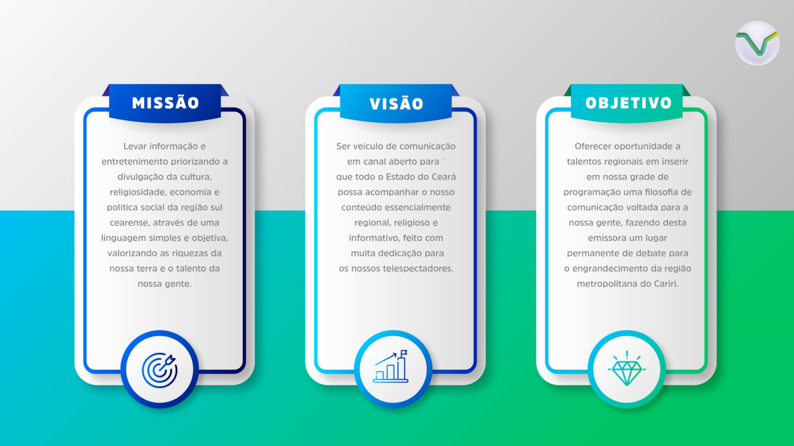
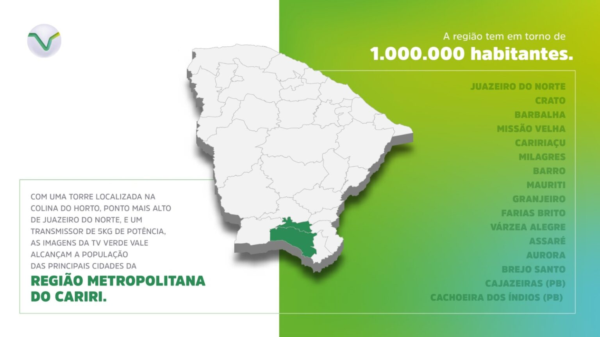

Quem Somos
A TV Verde Vale é uma emissora de televisão regional sediada em Juazeiro do Norte, no estado do Ceará. Opera no canal 13 (46 UHF digital) e pertence à Fundação 15 de Agosto. Seus estúdios estão localizados no bairro Salesianos e os seus equipamentos de transmissão estão na Colina do Horto, ponto mais alto de Juazeiro do Norte, de onde seu sinal alcança as principais cidades da região Metropolitana do Cariri.
 